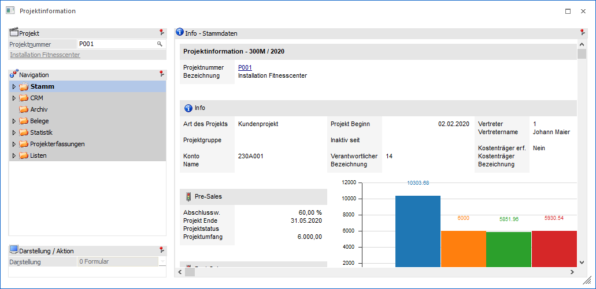
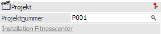
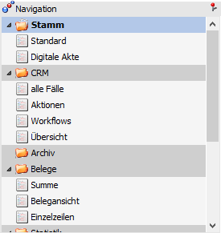
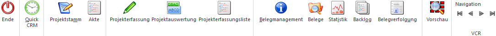

Die Projektinformation wird über den Menüpunkt…
1 WinLine INFO
1 Info
1 Projekte
… aufgerufen und gibt alle Informationen zu dem gewählten Projekt aus.
Hinweis
Mittels Drag & Drop können in dieses Fenster auch neue Archiveinträge für das Projekt hinzugefügt werden. Hierbei wird das Fenster "Neuer Archiveintrag" geöffnet und die Projektnummer automatisch als Schlagwort vorgeschlagen.

Projekt

Ø Projektnummer
An dieser Stelle wird die Projektnummer eingetragen, welche in der Folge betrachtet werden soll. Für die Suche steht neben dem Matchcode auch die Autovervollständigung zur Verfügung.
Hinweis
Es wird das zuletzt verwendete Projekt vorgeschlagen.
Ø Bezeichnung
Unterhalb der Projektnummer wird die Bezeichnung 1 des Projekts angezeigt.
Navigation

Ø Navigation
Im linken Teil des Fensters befindet sich die Navigation, in welcher alle auszuwertenden Teilbereiche mit deren Unteransichten aufgelistet werden. Die Standardansicht wird hierbei in Fettschrift dargestellt und automatisch beim Öffnen der Info geladen (eine Änderung des Standards ist mit Hilfe der rechten Maustaste möglich).
Folgende Bereiche, welche in den nachfolgenden Kapiteln detailliert erläutert werden, stehen hierbei zur Verfügung:
ü Bereich "Projekterfassungen"
Hinweis
Der Inhalt der Navigation kann mit Hilfe des Programms Einstellungen - Ansicht individuell gestaltet werden.
Ø rechte Maustaste
Wenn in der Navigation die rechte Maustaste gedrückt wird, so steht die folgenden Funktion zur Verfügung:
ü mit Shortcuts
Über die Funktion
"mit Shortcuts" können die Shortcuts zu den einzelnen Teilbereichen eingeblendet
werden. Diese Einstellung wird benutzerspezifisch abgespeichert.
ü Standardansicht
Über das
Kontextmenü kann zusätzlich bestimmt werden, welcher Bereich bzw. welche Ansicht
als Standardansicht verwendet werden soll (d.h. welche Informationen nach
Bestätigen der Projektnummer als erstes dargestellt werden sollen).
Dazu muss
der gewünschte Ordner bzw. Eintrag angewählt und über die rechte Maustaste die
Funktion "Standardansicht" angeklickt werden. Anschließend wird dieser Eintrag
in Fettschrift dargestellt.
Darstellung / Aktion

In dem Bereich "Darstellung / Aktion" kann die Darstellung des gewählten Info-Bereichs (siehe "Navigation") definiert werden. Zusätzlich werden hier die Aktionen (Sonderbuttons) der jeweiligen Anzeige zur Verfügung gestellt.
Ø Darstellung
An dieser Stelle kann mit Hilfe einer Auswahlliste gewählt werden, ob die Darstellung der gewünschten Informationen in Form eines Formulars oder einer Tabelle erfolgen soll. Die gewählte Darstellung wird pro Info-Bereich benutzerspezifisch gespeichert.
Buttons

Wenn aus der Projektinformation ein Programm der WinLine FAKT mit Hilfe der folgenden Buttons geöffnet und dort die Projektnummer nicht verändert wird, gelangt man bei deren Schließung automatisch wieder in die WinLine INFO zurück.
Ø Ende
Mit dem "Ende"-Button bzw. der Taste ESC wird die Projektinformation geschlossen
Ø Quick CRM
Wenn dieser Button angeklickt wird, kann ein CRM-Fall zu dem Projekt erfasst werden. Voraussetzung dafür ist:
ü Es muss eine gültige CRM-Lizenz vorhanden sein.
ü Der Benutzer muss ein CRM-Benutzer sein.
ü Es müssen entsprechende CRM-Aktionen bzw. CRM-Workflows mit der Kennzeichnung "QUICK CRM" angelegt sein.
Hinweis
Es werden im WinLine Standard 9 CRM-Aktionen (CRM-Gruppe "100") mitgeliefert.
Ø Projektstamm
Durch Anwählen dieses Buttons wird der Projektestamm in der WinLine FAKT geöffnet und das Projekt geladen.
Ø Akte
Durch Anklicken des Buttons "Akte" wird das Fenster "Akte" geöffnet, wo Detailinformationen zu diesem Projekt in Bezug auf andere Datenbereiche eingesehen werden können (nähere Information hierzu entnehmen Sie bitte dem Kapitel Akte).
Ø Projekterfassung
Wird der Button "Projekterfassung" gedrückt, so wird der Menüpunkt "Projekterfassung" in der WinLine FAKT geöffnet.
Ø Projektauswertung
Mittels dieses Buttons wird die Projektauswertung zum aktuellen Projekt ausgegeben.
Ø Projekterfassungsliste
Mit Hilfe dieses Buttons wird die Ausgabe der Projekterfassungsliste, eingeschränkt auf das aktuelle Projekt, gestartet.
Ø Belegmanagement
Es wird das Belegmanagement in der WinLine FAKT aufgerufen und mit der Projektnummer vorbelegt.
Ø Belege
Durch Anwahl des Buttons "Belege" wird in der WinLine FAKT das Programm "Belege" in dem Modus "Info" geöffnet. In diesem werden alle Belege des Projekts, eingeschränkt auf die letzten 14 Tage, angezeigt.
Ø Statistik
Wird dieser Button gedrückt, so wird in die WinLine FAKT gewechselt und die Verkaufsstatistik für das Projekt ausgegeben.
Ø Backlog
Mit Hilfe dieses Buttons erfolgt der Aufruf des Backlogs mit Vorbelegung der Projektnummer.
Ø Belegverfolgung
Durch Drücken dieses Buttons öffnet sich das Fenster "Belegverfolgung" bereits vorbelegt mit der Projektnummer.
Ø Vorschau
Durch Anwahl des Buttons "Vorschau" kann die Vorschau für Archiveinträge aktiviert werden.
Ø VCR-Buttons
Über die so genannten VCR-Buttons kann durch Mausklick zwischen den Datensätzen geblättert werden.
ü  Damit kann der
erste Datensatz angesprochen werden.
Damit kann der
erste Datensatz angesprochen werden.
ü  Damit kann der
vorherige Datensatz angesprochen werden.
Damit kann der
vorherige Datensatz angesprochen werden.
ü  Damit kann der
nächste Datensatz angesprochen werden.
Damit kann der
nächste Datensatz angesprochen werden.
ü  Damit kann der
letzte Datensatz angesprochen werden.
Damit kann der
letzte Datensatz angesprochen werden.